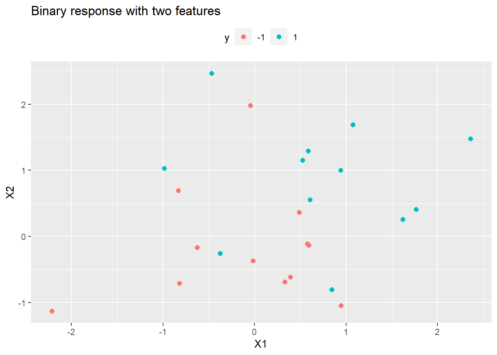

Chapter 8 Non-linear Models
Linear methods can model nonlinear relationships by including polynomial terms, interaction effects, and variable transformations. However, it is often difficult to identify how to formulate the model. Nonlinear models may be preferable because you do not need to know the the exact form of the nonlinearity prior to model training.
8.1 Splines
A regression spline fits a piecewise polynomial to the range of X partitioned by knots (K knots produce K + 1 piecewise polynomials) James et al (Gareth James 2013). The polynomials can be of any degree d, but are usually in the range [0, 3], most commonly 3 (a cubic spline). To avoid discontinuities in the fit, a degree-d spline is constrained to have continuity in derivatives up to degree d−1 at each knot.
A cubic spline fit to a data set with K knots, performs least squares regression with an intercept and 3 + K predictors, of the form
\[y_i = \beta_0 + \beta_1X + \beta_2X^2 + \beta_3X^3 + \beta_4h(X, \xi_1) + \beta_5h(X, \xi_2) + \dots + \beta_{K+3}h(X, \xi_K)\]
where \(\xi_1, \dots, \xi_K\) are the knots are truncated power basis functions \(h(X, \xi) = (X - \xi)^3\) if \(X > \xi\), else 0.
Splines can have high variance at the outer range of the predictors. A natural spline is a regression spline additionally constrained to be linear at the boundaries.
How many knots should there be, and Where should the knots be placed? It is common to place knots in a uniform fashion, with equal numbers of points between each knot. The number of knots is typically chosen by trial and error using cross-validation to minimize the RSS. The number of knots is usually expressed in terms of degrees of freedom. A cubic spline will have K + 3 + 1 degrees of freedom. A natural spline has K + 3 + 1 - 5 degrees of freedom due to the constraints at the endpoints.
A further constraint can be added to reduce overfitting by enforcing smoothness in the spline. Instead of minimizing the loss function \(\sum{(y - g(x))^2}\) where \(g(x)\) is a natural spline, minimize a loss function with an additional penalty for variability:
\[L = \sum{(y_i - g(x_i))^2 + \lambda \int g''(t)^2dt}.\]
The function \(g(x)\) that minimizes the loss function is a natural cubic spline with knots at each \(x_1, \dots, x_n\). This is called a smoothing spline. The larger g is, the greater the penalty on variation in the spline. In a smoothing spline, you do not optimize the number or location of the knots – there is a knot at each training observation. Instead, you optimize \(\lambda\). One way to optimze is cross-validation to minimize RSS. Leave-one-out cross-validation (LOOCV) can be computed efficiently for smoothing splines.
8.2 MARS
Multivariate adaptive regression splines (MARS) is a non-parametric algorithm that creates a piecewise linear model to capture nonlinearities and interactions effects. The resulting model is a weighted sum of basis functions \(B_i(X)\):
\[\hat{y} = \sum_{i=1}^{k}{w_iB_i(x)}\]
The basis functions are either a constant (for the intercept), a hinge function of the form \(\max(0, x - x_0)\) or \(\max(0, x_0 - x)\) (a more concise representation is \([\pm(x - x_0)]_+\)), or products of two or more hinge functions (for interactions). MARS automatically selects which predictors to use and what predictor values to serve as the knots of the hinge functions.
MARS builds a model in two phases: the forward pass and the backward pass, similar to growing and pruning of tree models. MARS starts with a model consisting of just the intercept term equaling the mean of the response values. It then asseses every predictor to find a basis function pair consisting of opposing sides of a mirrored hinge function which produces the maximum improvement in the model error. MARS repeats the process until either it reaches a predefined limit of terms or the error improvement reaches a predefined limit. MARS generalizes the model by removing terms according to the generalized cross validation (GCV) criterion. GCV is a form of regularization: it trades off goodness-of-fit against model complexity.
The earth::earth() function (documentation) performs the MARS algorithm (the term “MARS” is trademarked, so open-source implementations use “Earth” instead). The caret implementation tunes two parameters: nprune and degree. nprune is the maximum number of terms in the pruned model. degree is the maximum degree of interaction (default is 1 (no interactions)). However, there are other hyperparameters in the model that may improve performance, including minspan which regulates the number of knots in the predictors.
Here is an example using the Ames housing data set (following this tutorial.
library(tidyverse)
library(earth)
library(caret)
# set up
ames <- AmesHousing::make_ames()
set.seed(12345)
idx <- createDataPartition(ames$Sale_Price, p = 0.80, list = FALSE)
ames_train <- ames[idx, ] %>% as.data.frame()
ames_test <- ames[-idx, ]
m <- train(
x = subset(ames_train, select = -Sale_Price),
y = ames_train$Sale_Price,
method = "earth",
metric = "RMSE",
minspan = -15,
trControl = trainControl(method = "cv", number = 10),
tuneGrid = expand.grid(
degree = 1:3,
nprune = seq(2, 100, length.out = 10) %>% floor()
)
)The model plot shows the best tuning parameter combination.

## nprune degree
## 25 45 3How does this model perform against the holdout data?
## RMSE Rsquared MAE
## 0.16515620 0.85470300 0.093195038.3 GAM
Generalized additive models (GAM) allow for non-linear relationships between each feature and the response by replacing each linear component \(\beta_j x_{ij}\) with a nonlinear function \(f_j(x_{ij})\). The GAM model is of the form
\[y_i = \beta_0 + \sum{f_j(x_{ij})} + \epsilon_i.\]
It is called an additive model because we calculate a separate \(f_j\) for each \(X_j\), and then add together all of their contributions.
The advantage of GAMs is that they automatically model non-linear relationships so you do not need to manually try out many different transformations on each variable individually. And because the model is additive, you can still examine the effect of each \(X_j\) on \(Y\) individually while holding all of the other variables fixed. The main limitation of GAMs is that the model is restricted to be additive, so important interactions can be missed unless you explicitly add them.
References
Gareth James, Trevor Hastie, Daniela Witten. 2013. An Introduction to Statistical Learning : With Applications in R. 1st ed. New York, NY: Springer. http://faculty.marshall.usc.edu/gareth-james/ISL/book.html.